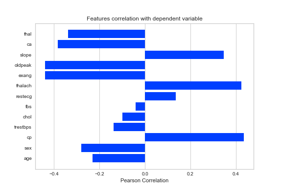
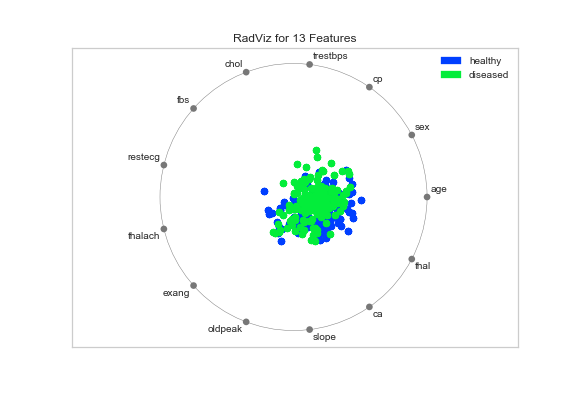

Feature Correlation: This figure shows the pearson correlation between data features and the dependent variable (heart disease). High positive corrleation is indicated towards the right, while the left indicates negative correlation.

Radial Visualizer: This figure shows the joint values of all data features, with blue representing healthy patients and green representing patients with heart disease.
This figure provides information on easily identifiable each patient group is. In this example,
the green and blue dots exhibit little separation and high interspersal, making it challenging to parse the two groups.